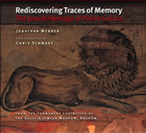

Traces of Memory
The Ruins of Jewish Civilization in Polish
Galicia
500 stunning colour photographs, all fully captioned, show the traces of the Jewish past that are still to be seen in the towns and countryside of southern Poland. Accompanying texts explore how and where Jews lived before the Holocaust, where they were murdered, and how they are remembered in Poland today. They also explore the Holocaust and the pre-Holocaust past are remembered and consider the implications of these memories both for Jews and for society more generally.
More info
Jewish civilization developed in Poland over a period of more than 800 years until it was brutally destroyed during the Holocaust. The Jewish past in Poland has become overshadowed by images of Auschwitz and the atrocities committed there. But if we are fully to understand the Jewish past here we need to place another set of images alongside these: the traces of memory that are to be found in the towns and villages where Jewish life once flourished. All the photographs in the book are fully captioned, and further contextualized in a series of perceptive essays.
This book is not historical in the conventional sense. It does not show old prewar photographs; on the contrary, it shows contemporary photographs—with the intention of showing what can be seen today about the past. They are the result of a creative collaboration over a number of years between the British scholar Jonathan Webber and the British photographer Chris Schwarz. Working village by village and town by town, the material that they have assembled offers a completely new way of looking at the Jewish past in Poland that was left in ruins. The idea has been to try to piece together a picture of the relics of Jewish life and culture in Galicia that can still be seen today, and to describe and interpret these traces in a manner that will be informative, accessible, and thought-provoking.
The photographs are stunning, in both senses of the word. Taken at all seasons of the year, they help the reader become acquainted with the landscape in which Jews lived, in all its variety, and specifically in its Polish setting. At the same time they are a moving tribute to the Jewish heritage in Poland and the richness of its culture. They also show how the violence with which it was destroyed by Nazi policy is being remembered and represented today.
The book is divided into sections, corresponding to different ways in which the subject can be approached: sadness in confronting ruins; interest in the original culture; horror at the process of destruction; and recognition of the efforts to preserve the traces of memory. It ends with a section showing some of the people who are involved, in different ways, with recreating the memory of the Galician Jewish past.
__________________________________________
Jewish life in ruins. This first section focuses on ruins: it is, after all, the key reality of the Jewish past in Poland. Jewish life was left in ruins after the Holocaust. Poland, as seen through Jewish eyes, is largely a landscape of ruins. There is great variety to these ruins: synagogues open to the sky, synagogues with bushes growing out from the roof, synagogues propped up by scaffolding or with only the central pillars still standing. Such images offer expressive silent testimony to the society that was uprooted and destroyed, as do Hebrew-language wall-paintings that are now virtually illegible. The ruins of cemeteries and tombstones present a similarly eloquent testimony. The gravestones that are left behind are like amputated stumps, bleeding wounds; they have been smashed to pieces and abandoned. There is a sense of desolation that seems to survive in the very air itself. Now there is nothing but silence, the painful ruins of a tragic past. In village after village, town after town, there are no Jewish communities here any more. The banality of the ruins they left behind is painful to look at. These pictures reinforce the stereotype of destruction, but at the same time underline the fact that the stereotype is not just an image, but a reflection of reality: these are real objects in real places that still exist. The destruction affected every town and village where Jews lived, and in most places the destruction was total.
Jewish culture as it once was. The substantial, even monumental synagogues that still stand today—in village settings as well as in the more major cities—are evidence that Jewish communities were indeed strongly rooted and well settled after more than eight centuries in their Polish environment. The synagogue art that flourished here is almost nowhere to be found in the United States, Israel, Britain and other countries where Jews of Polish origin now live, which is another reason why the surviving traces of the Jewish heritage still to be found here in Poland are particularly precious. No less important are the tombstones. Many have ornate lettering, pictorial carving, and a highly developed literary style. The tombstones still standing in Galicia are evidence of a rich culture and a highly elaborate civilization, and also of a changing social history. Jewish literacy, art, learning, leadership, mystical and political thought: the traces of all this, and much more, are still to be seen in Polish Galicia today.
The Holocaust: Sites of massacre and destruction. This third section focuses on what happened during the Holocaust. It represents yet another complete shift of mood and tempo, with the emphasis on what can be learnt in Poland today about the brutality of the destruction. The powerful photographs in this section aim to help readers go beyond the conventional symbols and understand more about what happened, how it happened, and where it happened. The photographs from Auschwitz are testimony to the huge force, scale, and mechanics of the destruction that took place there, but the pictorial record presented here also shows how too much of an emphasis on Auschwitz is historically misleading. Mass murders of Jews took place throughout the territory of Galicia—in open countryside, in city centres, in cemeteries, on hilltops, beside rivers. The serenity of many of the images—the forested glades with mass graves marked by rusting railings, the open fields with simple concrete memorials—contrasts starkly with inscriptions that capture the fury of survivors' emotions. There are monuments erected immediately after the war by Jews who survived the war and immediately set about commemorating the places where the atrocities happened. There are monuments erected more recently by survivors now living abroad or their descendants, whether by individuals remembering family members or organizations remembering whole communities. There are monuments erected by individual Catholic Poles and by civil authorities, after the war and more recently. Through this range of monuments and different styles of commemorative inscriptions, we see the wide variety of ways in which the memory of the Holocaust is to be found in Poland, as well as new ways in which it is being transmitted.
How the past is being remembered. This section moves on from the theme of the memorialization of the Holocaust to consider other processes that have affected the memory of Jewish civilization in postwar Galicia. There is much evidence of regeneration and restoration in an effort to recapture the past that was lost and take pride in it. Synagogues are being restored, a few for Jewish worship though mainly to house museums and libraries. Abandoned cemeteries are being reconsecrated by foreign Jews, and their walls and gates reconstructed; they are being cleaned, also by Polish youth groups nostalgic for the multicultural past of their country; and mausoleums are being constructed to protect the tombs of saintly rabbis that continue to serve as sites of pilgrimage. Museums are displaying whatever they have of Jewish interest; schools mount art exhibitions on Jewish themes. This work of reconstruction is slow and difficult. Many of those who devote themselves to it feel that they are reconnecting with a vital part of their past, or perhaps even that they are contributing to a process of healing and reconciliation as a way of coping with the consequences of the great catastrophe. On the other hand, signs of antisemitic feeling are also present and complicate the picture. What are the implications—for Poles, for Jews, and for European society as a whole—of what it is that is remembered about a great culture destroyed in the Holocaust and what is being forgotten?
The people making memory today. In strong contrast to the people-less photos of the rest of the book, this final section consists of a few photographs of those people who are involved, in different ways, with making memory. As a dramatic and up-beat end to the book, it offers hope for the future. To remember the past is to shape the future and give it some sense of direction.
About the authors
Jonathan Webber is Professor in the Institute of European Studies, Jagiellonian University, Kraków. He was previously UNESCO Professor of Jewish and Interfaith Studies at the University of Birmingham, and is a former Fellow in Jewish Social Studies at the Oxford Centre for Hebrew and Jewish Studies and Lecturer in Social Anthropology, University of Oxford. He has been conducting anthropological fieldwork in Galicia since 1988. He has established courses at the Jagiellonian University in Kraków in Holocaust and in Jewish Society, is a founder member of the International Auschwitz Council, and holds the Golden Cross of the Polish Order of Merit for his contribution to Polish–Jewish dialogue. His publications include Jewish Identities in the New Europe (published by the Littman Library) and Auschwitz: A History in Photographs.
Chris Schwarz has worked as a photographer since 1970 and has had a number of major exhibitions and published several photographic books. In 2004 he founded the Galicia Jewish Museum in Kraków, Poland, both to showcase the photographs in Traces of Memory and as a centre of cultural activity and education to increase Polish-Jewish understanding.
Contents
Introduction
1 Jewish life in ruins
2 Jewish culture as it once was
3 The Holocaust: Sites of massacre and destruction
4 How the past is being remembered
5 The people making memory today
Bibliography
Index
320 pages, 500
colour photographs, other illustrations, maps
ISBN: 978-1-874774-54-9
Publication August 2020
Published in North America by Indiana University Press (ISBN 0-235-33449-7)
Other books by this author:

Jewish Identities in the New Europe Edited by Jonathan Webber

Rediscovering Traces of Memory
The Jewish Heritage of Polish Galicia
Jonathan Webber, photographs by Chris Schwarz
Time, Memory, and Historical Consciousness in the Jewish Tradition